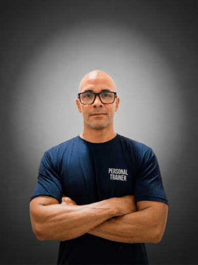

Mulheres 45+ · Menopausa
A menopausa não leva só o estrogênio.
Leva músculo e osso junto, se você deixar.
Sem treino de força
Com treino de força
Ilustração esquemática de corte transversal da coxa.
ARRASTA →
Menopausa · O que muda por dentro
O estrogênio é um escudo para osso e músculo.
Quando ele cai, a proteção vai junto. Não é preguiça nem falta de força de vontade. É fisiologia.
O dado que ninguém conta
−7,4%
de densidade óssea da coluna em cerca de 3 anos de transição.
Ao mesmo tempo, a gordura acelera e a massa magra cai. Quem perde mais músculo tem até 63% mais risco de fratura.
Estudo SWAN: Greendale et al., JBMR 2012 e JCI Insight 2019 · Shieh et al., JBMR 2023. Gráfico esquemático.
A virada · Treino de força
Musculação pesada fortaleceu osso já fragilizado.
101 mulheres na pós-menopausa com osteopenia ou osteoporose · 65 anos em média
8 meses · 2x por semana · 30 min · cargas acima de 85% do máximo · supervisionado.
Watson et al., J Bone Miner Res, 2018 (ensaio LIFTMOR).
Bônus · Sintomas da menopausa
−44%
nas ondas de calor moderadas a intensas.
15 semanas de musculação, 3x por semana. O grupo sem treino caiu só 2%. E o sono melhorou.
Músculo é órgão: ele conversa com osso, cérebro e metabolismo
Berin et al., Maturitas, 2019 · Berin et al., Climacteric, 2022 · Severinsen & Pedersen, Endocr Rev, 2020.
Salve e comece esta semana
Envelhecer é inevitável. Perder força, não.
1Musculação 2 a 3x por semanaCom carga que desafia e sobe ao longo das semanas.
2Proteína: 1,0 a 1,2 g/kg/diaReferência PROT-AGE. Ajuste com nutricionista.
3Liberação médica e supervisãoEssencial com osteopenia ou osteoporose.

Comente FORTE
e eu te mando por direct como começar.
JOTA · PERSONAL TRAINER
Bauer et al., J Am Med Dir Assoc, 2013. Conteúdo educativo, não substitui avaliação médica.